Latest paper
Asymptotic Optimal Search for Scalable Multi-Agent Linear Temporal Logic Task Planning
2026 IEEE 20th International Conference on Control and Automation (ICCA), 2026.
Robotics researcher - reactive planning, perception, and human-robot systems
I build robot planning and perception systems for uncertain, dynamic, and human-centered environments. My work connects reactive temporal logic planning, high-resolution robotic grasping, and practical robot experiments.
Latest paper
2026 IEEE 20th International Conference on Control and Automation (ICCA), 2026.
Profile
I am an associate researcher in the Intelligent Control and Robotics group at the University of Science and Technology of China. My research focuses on robots that can plan, react, perceive, and collaborate under limited observation and changing task conditions.
The homepage is organized around what visitors usually need first: representative papers, short demo videos, reproducible code, and contact links.
News
Daily data check · August 27, 2026
Research
Reactive planning
Planning frameworks for robots that must adapt online when observations are local, incomplete, or changing during execution.
Representative paperRobotic grasping
Grasp detection and motion planning pipelines designed for thin, stacked, unseen, and visually challenging objects.
Representative paperHuman-robot systems
Human-centered robot systems using gaze, language, and task specifications to connect user intent with executable robot behavior.
Demo videosFeatured work
Publications
0 shown
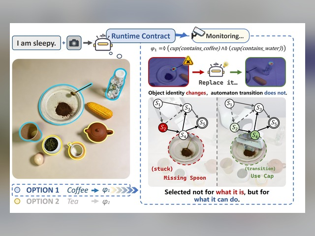
IEEE Transactions on Robotics, 1-20, 2026.
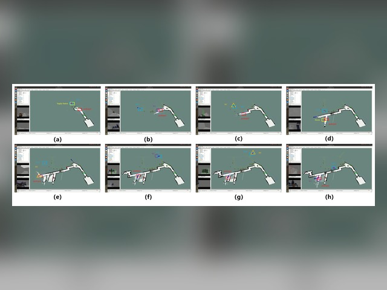
IEEE Robotics and Automation Letters, 11(7):8060-8067, 2026.
IEEE Transactions on Neural Networks and Learning Systems, 1-15, 2026.
IEEE Transactions on Industrial Electronics, 1-13, 2026.
IEEE Trans. Cybern, 56(8):4336-4349, 2026.
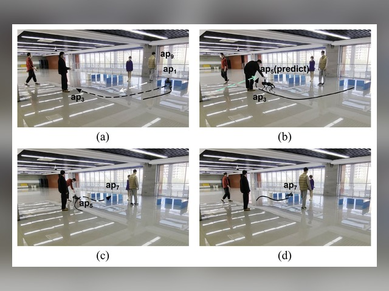
IEEE Transactions on Automation Science and Engineering, 22:5293-5307, 2025.
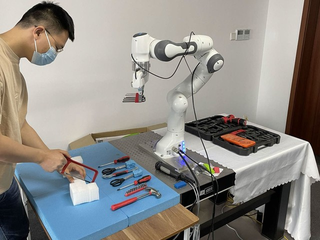
IEEE Transactions on Automation Science and Engineering, 22:643-655, 2025.
Journal of Automation and Intelligence, 4(1):39-51, 2025.
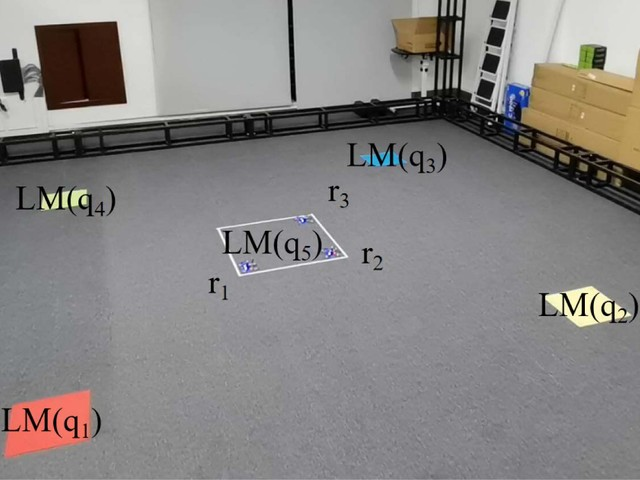
IEEE Robotics and Automation Letters, 9(7):6146-6153, 2024.
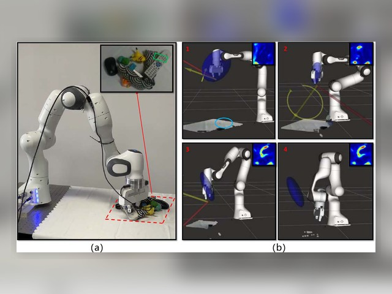
IEEE Transactions on Artificial Intelligence, 5(6):3134-3145, 2024.
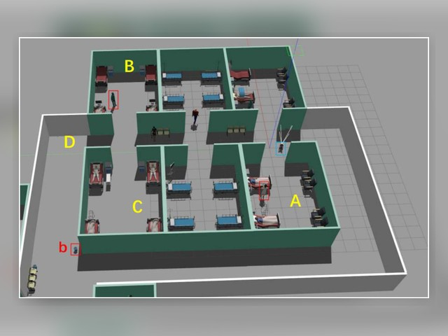
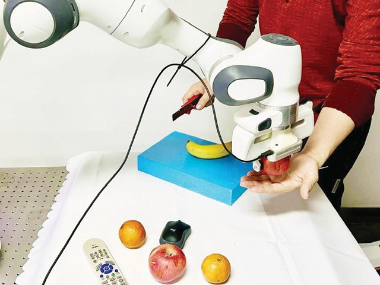
Robotica, 42(2):415-434, 2024.
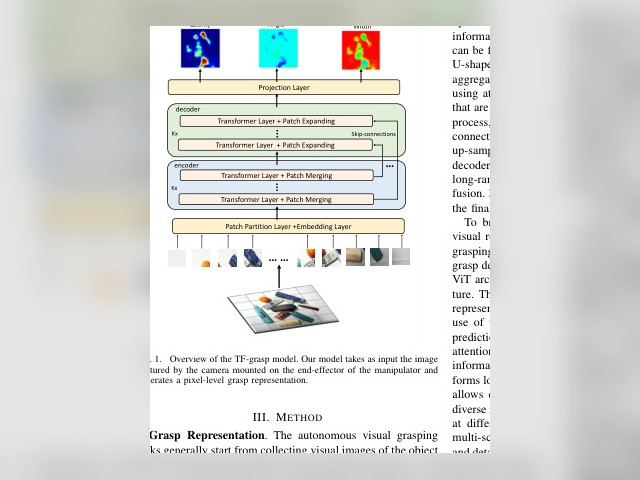
2026 IEEE 20th International Conference on Control and Automation (ICCA), 1-6, 2026.
2026 IEEE 20th International Conference on Control and Automation (ICCA), 1710-1715, 2026.
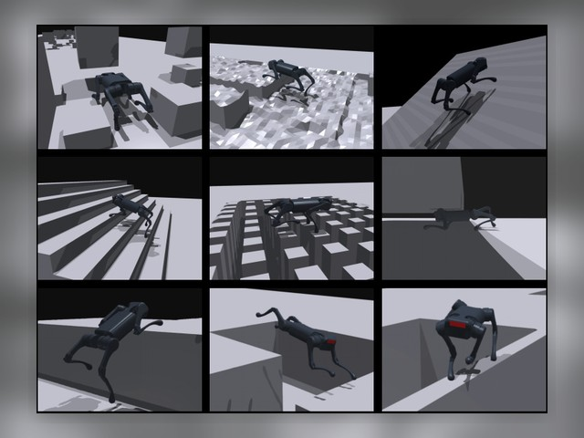
IEEE/RSJ International Conference on Intelligent Robots and Systems, 12904-12909, 2024.
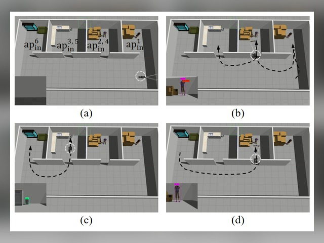
IEEE/RSJ International Conference on Intelligent Robots and Systems, 2299-2304, 2024.
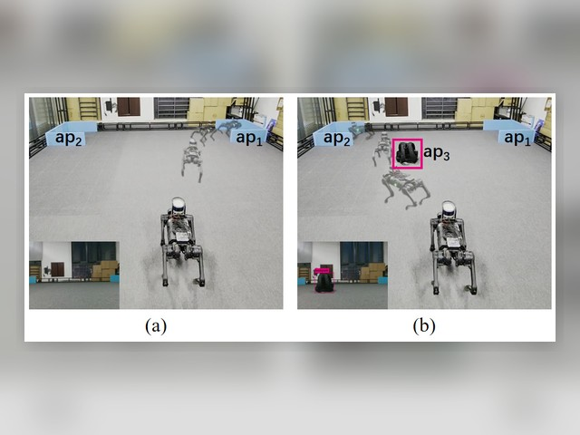
IEEE International Conference on Robotics and Automation, 2520-2526, 2024.
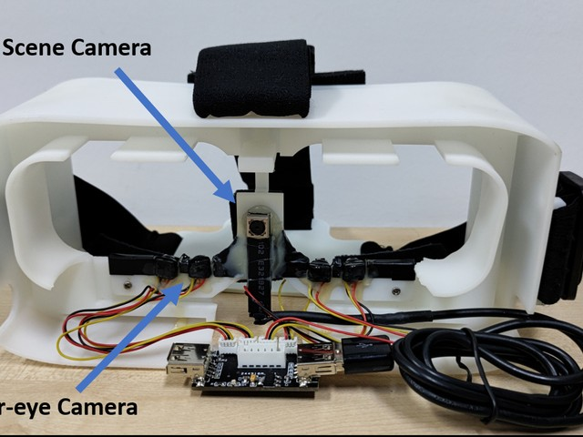
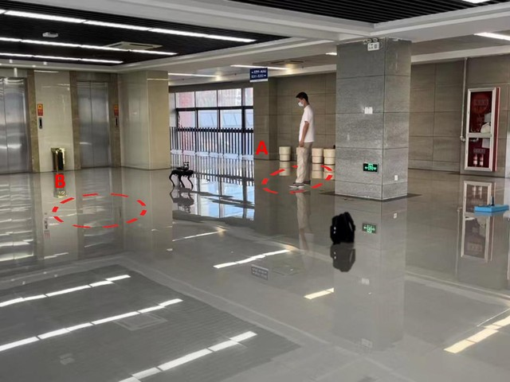
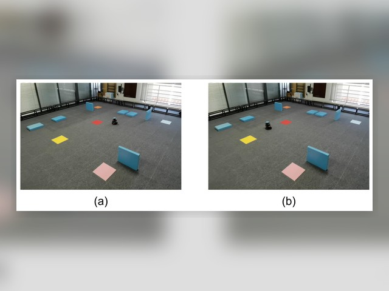
IEEE International Conference on Robotics and Automation, 1579-1585, 2023.
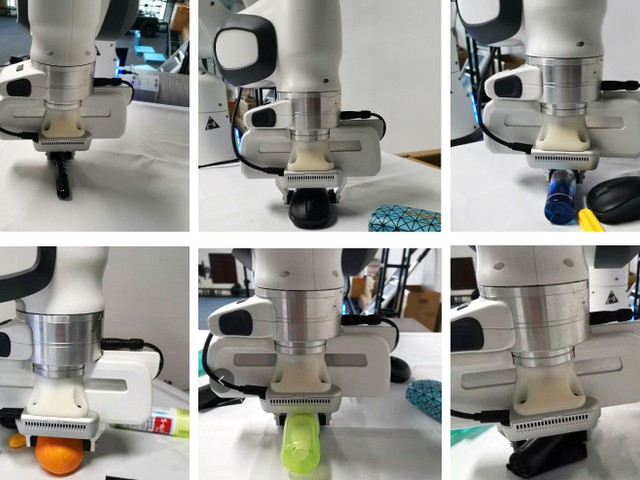
IEEE International Conference on Advanced Robotics and Mechatronics, 57-62, 2022.
Videos
Human-robot planning under local observation and reactive execution.
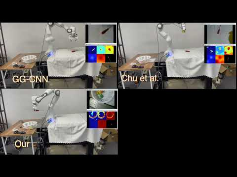
Watch on YouTubePhysical experiments showing HRG-Net style high-resolution grasping behavior.
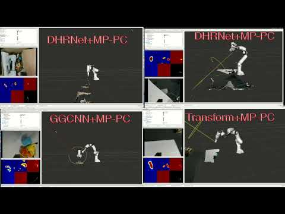
Watch on YouTubeStacked object grasping process connected to DHRNet plus MP-PC experiments.
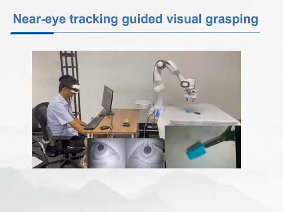
Watch on YouTubeHuman attention as an interface for assistive robot manipulation.
Code and projects
Code for improved grasping of thin and stacked objects with DHRNet and multiview perception-based trajectory control.
Open repositoryhigh resolution network for robotic grasping
Open repositoryRepository related to dual reactive planning for heterogeneous robots in unknown environments.
Open repositoryNotes in Robot Task and Motion Planning
Open repositoryCV
A compact CV view is included on the homepage so visitors can quickly scan appointment, education, and research record before contacting.
Intelligent Control and Robotics group, University of Science and Technology of China.
Intelligent Control and Robotics group, University of Science and Technology of China.
Research in robotic planning, control, and human-robot systems.
Robotics and control systems.
Engineering background before graduate research at USTC.
13 journal articles, 9 conference papers, 1 preprint; publication record spans 2022-2026.
8 first-author works across the verified publication record.
DHRNet-MP-PC, HRG_Net, double_reactive, Task-and-Motion-Planning; descriptions and activity are refreshed from GitHub.
Visitors
IP lookup runs in the visitor's browser
 External counter pending
External counter pending
Visitor location is estimated from public IP geolocation. For production-grade aggregate visitor maps, replace the counter badge with a ClustrMaps or MapMyVisitors embed after registering the site.
Contact
For collaborations, code questions, or robot demo materials, email is the fastest path. Profiles below help search engines and visitors connect the same research identity across platforms.